In Seattle, they have a saying
"If you don't like the weather, wait five minutes and then shoot yourself in the face"
The project aims to understand the emphasis of weather on the culture of Seattle. It is expected that the number of checkouts of books from SEATTLE PUBLIC LIBRARY corresponds to the weather and hence the overall mood of the city depends on the day.
Does the weather in Seattle really effect people and their activities, or is it just an assumption we make?